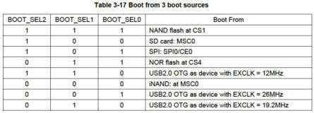
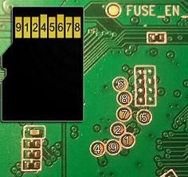
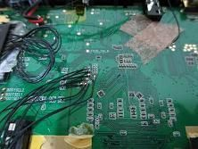
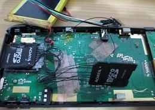

Steward
分享是一種喜悅、更是一種幸福
掌機 - Neo Geo X v370 - SD0開機
如何在新版本的掌機上透過MicroSD開機呢？查看君正的資料手冊後，發現有SD card: MSC0的選項，這個選項應該就是SD0，而預設的開機選項則是Nand flash at CS1

後來發現國外網站有高手提供測試點位置，如下所示

接著焊接這一些接腳並使用SDCard轉接卡當作母座


U-Boot程式位於https://drive.google.com/file/d/0BzVU0vOuWe-sbXZxYXlQcWtJX2M/edit?usp=sharing檔案中，那該如何解開呢？可以使用國外高手提供的程式碼
/*
sys_update_file_extract version 0.1
gcc -o sys_update_file_extract sys_update_file_extract.c
This will extract the sys_update_file from neo geo x into the following files
uboot.bin = boot loader + partition table
kernel1.bin = 1st kernel
kernel2.bin = 2nd kernel
rootfs.bin = partition 1, normally the root filesystem
appfs.bin = partition 2, normally mounted to /usr/mtdblock3
cfgfs.bin = partition 3, normally mounted to /usr/mtdblock4
*/
#include <unistd.h>
#include <stdio.h>
#include <stdint.h>
#include <stdlib.h>
#define HEADER_SIZE 0x104;
uint64_t get_num(FILE *in);
void write_file(FILE *in, char *outfile, uint64_t offset, uint64_t length);
typedef struct {
uint64_t sd_offset; // sd card offset where this chunk would be written
uint64_t sys_offset; // offset in sys_update_file where this chunk begins
uint64_t length; // length of this chunk
} chunk;
int main(void)
{
FILE *in;
int i = 0;
int sysver;
chunk uboot, kernel1, kernel2, rootfs, appfs, cfgfs;
in = fopen("sys_update_file","r");
if (in == NULL) {
printf("ERROR: unable to open sys_update_file");
exit(1);
}
uboot.length = get_num(in);
uboot.sys_offset = HEADER_SIZE;
kernel1.length = get_num(in);
kernel1.sys_offset = uboot.sys_offset + uboot.length;
kernel2.length = get_num(in);
kernel2.sys_offset = kernel1.sys_offset + kernel1.length;
rootfs.length = get_num(in);
rootfs.sys_offset = kernel2.sys_offset + kernel2.length;
appfs.length = get_num(in);
appfs.sys_offset = rootfs.sys_offset + rootfs.length;
cfgfs.length = get_num(in);
cfgfs.sys_offset = appfs.sys_offset + appfs.length;
sysver = get_num(in);
uboot.sd_offset = get_num(in) << 20;
kernel1.sd_offset = get_num(in) << 20;
kernel2.sd_offset = get_num(in) << 20;
rootfs.sd_offset = get_num(in) << 20;
appfs.sd_offset = get_num(in) << 20;
cfgfs.sd_offset = get_num(in) << 20;
printf("sys_update_file version: %d\n", sysver);
printf("uboot:\n sys offset: %ld\n length: %ld\n sd offset: %ld\n", uboot.sys_offset, uboot.length, uboot.sd_offset);
write_file(in, "uboot.bin", uboot.sys_offset, uboot.length);
printf("kernel1:\n sys offset: %ld\n length: %ld\n sd offset: %ld\n", kernel1.sys_offset, kernel1.length, kernel1.sd_offset);
write_file(in, "kernel1.bin", kernel1.sys_offset, kernel1.length);
printf("kernel2:\n sys offset: %ld\n length: %ld\n sd offset: %ld\n", kernel2.sys_offset, kernel2.length, kernel2.sd_offset);
write_file(in, "kernel2.bin", kernel2.sys_offset, kernel2.length);
printf("root fs:\n sys offset: %ld\n length: %ld\n sd offset: %ld\n", rootfs.sys_offset, rootfs.length, rootfs.sd_offset);
write_file(in, "rootfs.bin", rootfs.sys_offset, rootfs.length);
printf("app fs:\n sys offset: %ld\n length: %ld\n sd offset: %ld\n", appfs.sys_offset, appfs.length, appfs.sd_offset);
write_file(in, "appfs.bin", appfs.sys_offset, appfs.length);
printf("cfg fs:\n sys offset: %ld\n length: %ld\n sd offset: %ld\n", cfgfs.sys_offset, cfgfs.length, cfgfs.sd_offset);
write_file(in, "cfgfs.bin", cfgfs.sys_offset, cfgfs.length);
fclose(in);
return 0;
}
// write out the chunk of data to the passed filename
void write_file(FILE *in, char *outfile, uint64_t offset, uint64_t length)
{
char buffer[2048];
int size, left;
FILE *out;
out = fopen(outfile, "w");
if (out == NULL) {
printf("ERROR: unable to open %s for writing\n", outfile);
exit(1);
}
fseek(in, offset, SEEK_SET);
left = length;
while (left > 0) {
size = fread(buffer, 1, (left > 2048 ? 2048 : left), in);
fwrite(buffer, 1, size, out);
left -= size;
}
fclose(out);
}
/*
Each chunk from the header is 20 bytes long
bytes 1-10 are a string + \0 thats a number
bytes 11-20 are unknown, but all of them are the following in hex
FF 00 90 A3 04 08 84 6E 98 BF
This function returns the number from bytes 1-10
*/
uint64_t get_num(FILE *in)
{
char buffer[20];
uint64_t value;
if (fread(buffer, 1, 20, in) != 20) {
printf("Error reading from file\n");
exit(0);
}
if (sscanf(buffer, "%ld", &value) != 1) {
printf("Error parsing number\n");
exit(0);
}
return value;
}
把編譯後的執行檔和sys_update_file放在一起，然後執行編譯後的執行檔即可做解壓縮的動作，接著使用WinHEX將uboot.bin直接Clone寫到SDCard即可，司徒目前是使用2GB SDCard做測試
Baudrate 57600bps
SD card found! init ok U-Boot 1.1.6-ga9493686 (Nov 19 2012 - 09:47:30) Board: Umido@SNK (CPU Speed 1020 MHz) DRAM: 256 MB Error: Unknown flash ID, force set to 'SST_ID_39SF040' Flash: 512 kB NAND:nand_get_flash_type: No NAND device found!!! NAND device: dev_id: 0x0000 ext_id: 0x000000 not known! nand_scan: No NAND device found!!! 0 MiB SD init ok *** Warning - MMC/SD first load, using default environment -=-=-=-= 0x8ff7f000 -=-=-=- jz4750_lcd.c 1439 usb status is 0 read vbat value is 3734 usb status is 0 SNK go go go! act8600: Write register --00000080 data: 00000024 act8600: Read register --00000081 data: 00000005 act8600: Write register --00000081 data: 00000081 LCD quick disable timeout! jz4750_lcd.c 1385 jz4750_lcd.c 1488 pix clk is 12142857 In jz4750fb_deep_set_mode pix clk is 12142857 jz4750_lcd.c 1500 LCD quick disable timeout! pix clk is 12142857 jz4750_lcd.c 1515 usb status is 0 usb status is 0 jz4750_lcd.c 1612 SD init ok
如果是從SD0開機，則會顯示SD card found!，反之則是顯示MMC init ok字樣